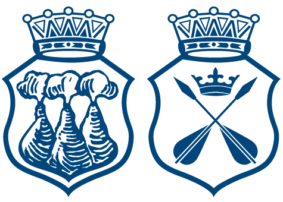

När maj månad blommar och kvällen blir lång, fylls nationen av skratt, musik och sång. Vi samlas till bal i traditionens namn, med vänner och glädje i vårens famn. Västmanlands-Dala nation bjuder in till den årliga vårbalen.
Pris för medlemmar är 600 kr. För ickemedlemmar är priset 650 kr.
Klädkoden är högtidsdräkt. Nationskort/gästkort och giltigt ID krävs!
Anmälan sker genom att mejla anmalan@v-dala.se eller hos kuratorsexpeditionen. Sista anmälningsdag är 5 maj.
Efter sittningen är det släpp med styrdans, ackompanjerat till live musik! Får du inte en biljett till sittningen? Då ska du självklart komma på släppet!
Pris för medlemmar är 60 kr. För ickemedlemmar är priset 100 kr. Klädkoden är mörk kostym. Nationskort/gästkort och giltigt ID krävs!
När vårens ljus smyger in i vår sal, fylls rummet av skratt och stämning total. Vi samlas som vänner, sida vid sida, i en natt där gemenskap får blomstra och sprida. Västmanlands-Dala nation bjuder in till vårbalhelgens vännationssittning.
Priset är 250 kr. Klädkoden är udda kavaj, gärna med våriga färger. Nationskort eller gästkort och giltigt ID krävs!
Anmälan sker genom att maila anmalan@v-dala.se eller hos kuratorsexpeditionen. Sista anmälningsdag: 5 maj.
För medlemmar är släppet gratis. För ickemedlemmar kostar det 80 kr.
Klädkoden är udda kavaj. Nationskort/Gästkort + giltigt ID krävs!